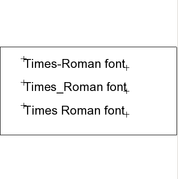

| Source image | Reference image |
|---|---|
 |
This tests ACI file font name normalization. The CGM file displayed on the left contains a fontlist with 3 variations of "TimeRoman" and 3 text elements which reference each of these font names. The ACI file substitutes "Arial" for all 3 fonts even though the exact name differs. The image on the right shows how the CGM should be rendered if the font normalization works correctly.